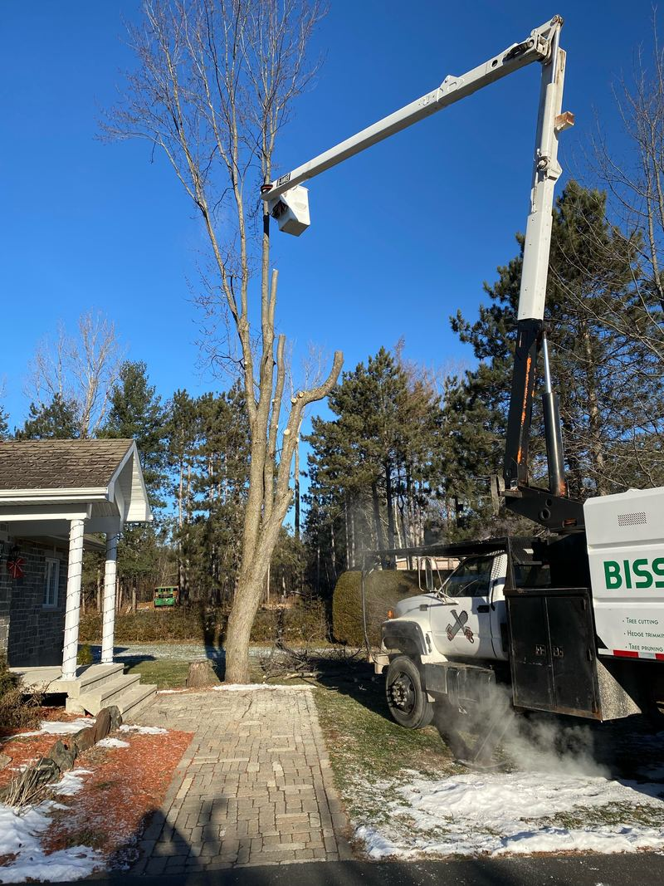

Tree removal, wood chipping, tree pruning and hedge trimming in Gloucester. Gloucester is in the City of Ottawa. Gloucester, a former city now part of Ottawa, is in Ottawa's east end. Fully insured with $5 million in liability insurance, bilingual, with 24-hour emergency service and free on-site estimates.

Most of Gloucester is inside Ottawa's urban area, where the Tree Protection By-law (2020-340) applies. Removing a private tree 30 cm or more across (measured 1.3 m up the trunk) on a lot of one hectare or less needs a City permit, applied for with an arborist's report.
A dead or hazardous tree that is an immediate threat to safety (photograph it first) and an ash infested with emerald ash borer are exempt. On the estimate visit we tell you whether your tree needs a permit.
Yes. Gloucester is in our regular service area. Estimates are free and done on site, and we offer 24-hour emergency service for dangerous trees.
Often, yes: in Ottawa's urban area a private tree 30 cm or more across on a lot of one hectare or less needs a City permit. A dead or hazardous tree that is an immediate threat to safety, and an ash infested with emerald ash borer, are exempt. We check on the estimate visit.
Yes. Service is fully bilingual, in English and French. Call (613) 558-4806.
Free on-site estimates, bilingual service, 24-hour emergency response. Bisson aims to reply the same day.
Ottawa east to Clarence-Rockland, Hawkesbury and Cornwall, and north to Thurso and the Ottawa Valley. Out of area? Bisson travels for the right job, so give Phil a call.